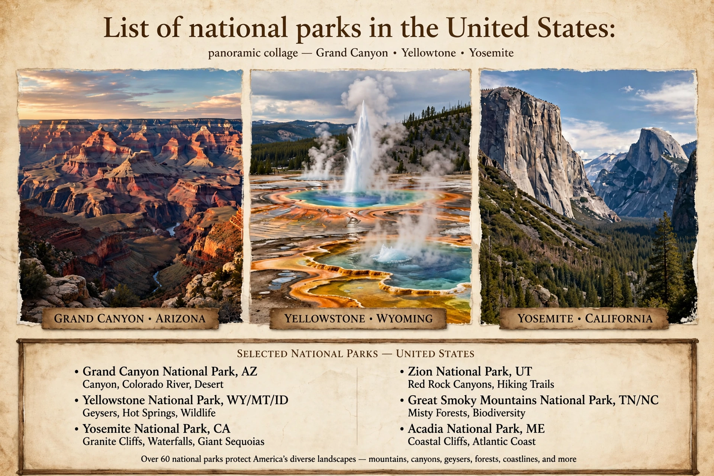

The United States has 63 national parks administered by the National Park Service, an agency of the Department of the Interior. National parks must be established by an act of Congress. The first, Yellowstone, was signed into law by President Ulysses S. Grant in 1872.

Criteria include natural beauty, unique geological features, unusual ecosystems, and recreational opportunities. Many parks were previously protected as national monuments by presidential proclamation under the Antiquities Act. Alaska and California have the most parks.
| Park | State(s) | Established | Notes |
|---|---|---|---|
| Yellowstone | Wyoming, Montana, Idaho | 1872 | First national park; geothermal features, Old Faithful |
| Yosemite | California | 1890 | Granite cliffs, waterfalls, giant sequoias |
| Grand Canyon | Arizona | 1919 | Vast canyon of the Colorado River |
| Zion | Utah | 1919 | Sandstone canyons |
| Acadia | Maine | 1919 | Atlantic coast, Cadillac Mountain |
| Denali | Alaska | 1917 | Highest peak in North America |
| Everglades | Florida | 1947 | Subtropical wetland |
| Great Smoky Mountains | Tennessee, North Carolina | 1934 | Most visited park |
| New River Gorge | West Virginia | 2020 | Most recently redesignated park at time of list compilation |
The National Park Service was created in 1916. Programmes such as the Civilian Conservation Corps built trails, lodges and roads in many parks during the Great Depression.